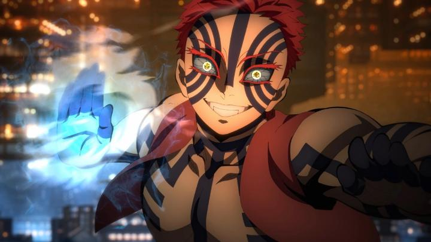

Disclaimer: This review, as of this writing, covers "Demon Slayer - The Movie - Infinity Castle" (or "Infinity Caslte - Part 1 - Akaza Returns"), the first of three feature-length films serving as the conclusion to the "Demon Slayer" (or "Kimetsu no Yaiba") anime. I would normally wait to review all three at once and give a score to them as a whole. Because of the success of the film, and to remind myself of my thoughts when later films release, I'm writing reviews as these come out, and may either overwrite this review page with thoughts on the second or third film, or give them their own review page."Infinity Castle" (Final Movie 1):... sheesh, when did "Demon Slayer" become "Naruto?" I think I've made that comparison before, but I didn't know it had gotten this bad...Let's recap my perspective first. "Demon Slayer" has been one of the bigger anime hits of the past decade. I saw the first season and enjoyed it. I saw the film "Mugen Train" and enjoyed it. But it was becoming clear that the show was veering into an expanding roster of obnoxious characters, and leaning more into their character-driven comedy, and that the writing was getting weaker each season. Thoughtful critiques of the series seem to have the same conclusion. So I let go of the series for a while... but when the series was finally reaching its end? AND it would be a theatrical trilogy event? OK, for someone only moderately familar with the characters, this is a great excuse to jump back in. So, without catching up on the seasons I missed, I walked into a screening for the first movie, "Infinity Castle."I do not recommend doing what I did. "Infinity Castle" literaly drops you into the situation - Tanjiro and the entire Demon Slayer Corps are trapped in the massive and dynamic castle dimension, and must find and defeat the franchise's biggest bad guy, Muzan - or at least survive until sunrise. Not easy when an army of thousands of demons, including the Muzan's powerful Upper Rank generals, are hunting you down in a landscape seemingly thousands of miles wide and tall. Even with a short emotional introduction, the movie doesn't even try to explain HOW everyone got trapped in the castle. Or perhaps, it tries to, but extremely poorly. The film is also extremely exposition heavy as it goes on, specifically regarding character backgrounds and motivations, often listing off or referencing characters and events I've never seen. In short, watching the entirety of the "Demon Slayer," and not missing a single episode, feels paramount to not just understanding what's going on, but enjoying the movie at all. If you've never seen the series, but read headlines about "Infinity Castle" breaking anime box office records, you'd be tempted to give this movie a try, to which I say "avoid it like the plague until you finish your homework."That's especially frustrating because "Demon Slayer" is not a complex anime. Less than five minutes of extra footage at the beginning of this first film could have perfectly set up the grand stage of this final climatic series of battles. A better director would have recognized this. To capture and entertain a wider audience, as well as the long-time fans, it wouldn't take much to get everyone on the same page, and enjoying the dramatic build-up to boot. But no, the movie has no interest in holding your hand to get to the other side of the highway, even if it insists on holding your hand for the next several miles of boring sidewalk. Which brings us to the rest of the flaws. Seemingly everyone and their mother is brought into the Infinity Castle to survive the night. Well, not literally everyone in the anime's realm, but everyone you've seen in the anime. That's every hero, every high-ranking Demon Slayer, and every low-ranking no-name apprentice, most of whom are separated at the start. That's a lot of names to track, purely because the rule of shonen anime is to have a minimum of 100 characters before it ends. And you probably only care about... 6, maybe 8 of them? Within this first film, we get three separate major battles with high-ranking demons, each against one or two of our heroes. That means at the start, we see dozens of heroes running down infinite hallways, hoping to catch up to their friends or find the final boss. And at the end of the movie... we see most of those same heroes still running, not having encountered a single thing. Presumably, they'll all get at least one exciting battle somewhere in the film trilogy? But there are so many characters, most of them clearly unncessary for the plot, that I wouldn't count on it.But OK, three battles. The fight scenes in "Demon Slayer" are awesome, right? How "cool" these villains are will be up to interpretation. Two of the big fights revolve around demons that are powerful, but also extremely casual to the point of being friendly. Yes, it's effectively creepy, but also quickly irritating. And the story pattern of "Demon Slayer" still mostly holds: we get a flashy battle, then a long backstory flashback about how the villain became a demon, and then it ends. In "Infinity Castle," if you include both the demon's flashbacks and the hero's flashbacks (explaining their personal hatred to the demon in question, hyping up the dramatic value)... more than half of the film's runtime is dedicated to flashbacks and backstory. I don't care if the backstories are effective, that ratio just ain't right. Especially when the runtime of the film is a whopping 2 hours and 35 minutes.  2 hours. And 35 minutes. Spent mostly on extended backstory. And on watching background characters running to nowhere. And on repetitive dialogue, like characters yelling out their arbitrary technique-name before swinging their sword, and such as Tanjiro's analysis repeating like a broken loop in his head looking for a demon's weakness. This movie could be edited down to less than half its length, and be a better movie by ALL measures for it. A common sentiment from film critics was that "Infinity Castle" feels like a final season of television episodes, unedited - that'd be roughly seven episodes in a row without opening and ending credits. On television, it's easier to accept this... one or two episodes per battle, plus one extra for a backstory flashback, repeat... but in theatrical film, there's this magical thing called EDITING, where you aren't restricted to 22-minute-blocks-plus-credits-plus-commercials time limits. Heck, edit the film down and release the uncut version as the television version, which we know was the plan from the start to double the money back... not editing the film version feels lazy to major extremes. So is there anything to salvage in "Infinity Caslte?" Sure, the production values are good. Not as good as the best of the first season, or the best of "Mugen Train," however. Maybe I've just grown numb to the show's style at this point, but "Infinity Castle" feels simply on par to its own standards, not unlike (insert name of virtually any film-for-shonen-anime-franchise here). The fight against Akaza, the bigger battle of this first movie, has a bit more flourish thanks to hand-to-hand combat with a bit more tactile motion, but based on the traditions of prior seasons, I assume the production team is saving its best animation for the end of the "season" (i.e. the last film in this trilogy). Tanjiro's unique take of actually analyzing his opponent makes his battle more interesting. And despite the length, every battle (when it isn't a flashback) is engaging. There is a sense that no one is safe in this final arc, even in this first film, and the possibility of your favourite character dying will no doubt keep everyone to the edge of their seat. And finally, the English dub. Yes, I saw the dub. When exposition is THIS heavy, and when you're really meant to take in the visual spectacle, or quiet contemplative drama of the backstories... I can't fathom why anyone would say with a stragiht face that the subtitled version is essential (unless of course, you watched 60+ episodes that way and want to stay consistent). Even if the dub sounds like a basic shonen dub on the same level as "Naruto" (for better or for worse), I think it goes a long way to enhancing the dramatic heft of a villain, and for characters who are meant to look and sound cool... they sound very cool. And perhaps you heard American actor Channing Tatum is randomly in the dub? The side character he plays actually fits him, and I thought he did a fine job, name pronunciations too. And the music, including the ending themes, is still great, although the sound design for the battles were noticably unambitious in a theatre. A final note if you do want to see this... in IMAX? Nah. I did, and no, I don't think the scale of the battles, the animation quality, or the sound design takes advantage of the format at all - I've definitely heard better use of the sound from other movies in an IMAX theatre. A regular theatre screen would be fine, or frankly, even your Netflix television or laptop screen. Whatever you would watch the "Demon Slayer" television series on. Because in the end, that's what this is, in a misleading theatrical format. "Demon Slayer - The Movie - Infinity Castle" (part 1) is still moderately fun. And no doubt, for huge fans, it's essential viewing. But without the context of the rest of the trilogy, it's hard to fully appreciate, and its flaws are all the more visible on a big screen, even more so without knowing every character and event that occurred elsewhere in the franchise. Frankly, I'd rather just watch "Mugen Train" again. But after the second and third film of the trilogy... especially if they edit all three in a under-three-hours experience, to get us to pay for admission yet again... maybe I'd change my mind. Part 1: total score: 3.14 / 5.00, from visual: 3.5, animation: 3.5, audio: 4.0, acting: 3.5, story: 2.0, fun: 3.0, bias: 2.5.
- "Ani" More reviews can be found at : https://2danicritic.github.io/ Previous review: review_Demon_Slayer_-_Mugen_Train Next review: review_Devilman_-_Crybaby